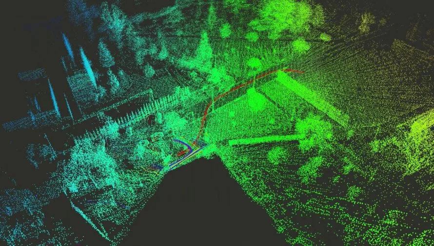
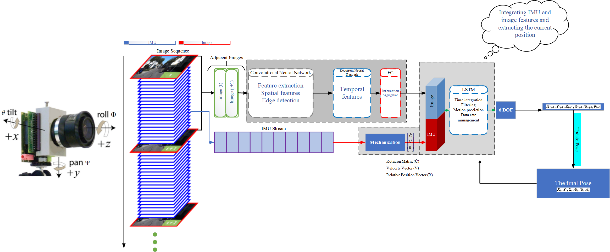
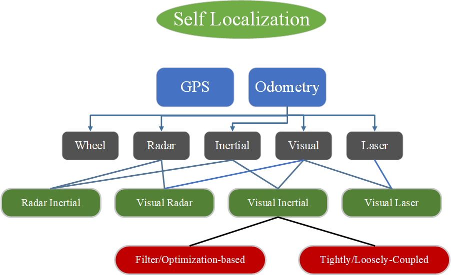

SLAM is a technique used in robotics and computer vision to create a map of an environment while keeping track of the device's location within that environment.
Visual-Inertial systems combine visual information from cameras with inertial measurements from accelerometers and gyroscopes to improve localization and mapping.
Visual Odometry involves estimating the motion of a camera in a sequence of images to track its position over time.
